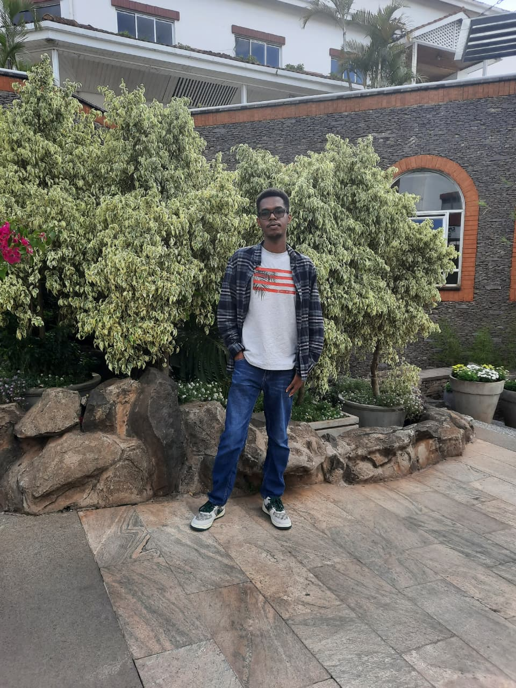

Welcome to Lens & Light Photography. Every photograph tells a story, preserving memories, emotions, and the beauty of the world around us.
view gallery
Hello my name is Mark.I am a photographer who loves to capture the beauty of the world around us. I am passionate about capturing the essence of a moment and preserving it for future generations. I enjoy capturing beautiful landscapes, city life, and memorable moments.Every photo tells a story, preserving memories, emotions, and the beauty of the world around us.